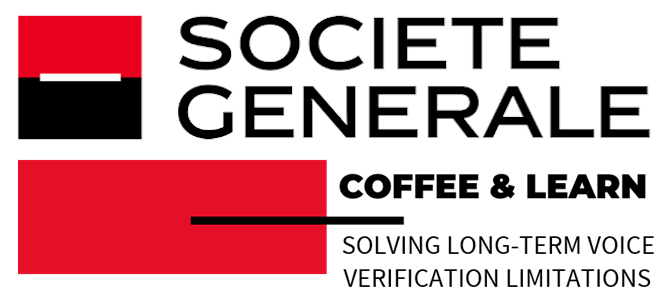

Technologies Mésozoïques
An innovative team seamlessly blending expertise in AI and data science to forge groundbreaking synthetic data solutions. 251902000 years and counting.

An innovative team seamlessly blending expertise in AI and data science to forge groundbreaking synthetic data solutions. 251902000 years and counting.

RAG marks a transformative advancement in utilizing digital information, enabling the creation of diverse, accurate, and relevant data types. It generates context-rich text for digital assistants, updated articles, personalized educational content, and customer support responses. Additionally, RAG enhances gaming narratives, user-specific content recommendations, and data analysis reports by integrating varied data sources. Its strength lies in harnessing vast datasets and knowledge bases, ensuring generated content is not only varied but also informed and tailored to specific needs.
In our pursuit, we are redirecting the focus from traditional, opaque machine learning algorithms, predominantly used for commercial data mining, towards transparent, retrieval-augmented generation technologies, primarily employed for enhancing user-centric information retrieval and decision support systems.
As major players in the industry often release proprietary models lacking in transparency and robust scientific validation, our team is committed to rigorously peer-reviewing our research and contributing to the advancement of open-source knowledge in the field of RAG. This commitment fosters a community-driven approach to AI development and ensures the ethical and responsible use of these powerful technologies.

Presented at INTERSPEECH 2018 conference
Our team members have compiled a unique dataset, which included 229 speakers spanning across an average of 18.9 years per speaker. This dataset has allowed us to glimpse into the change of extracted voice features over time and enabled the subsequent research into longitudinal speaker verification modeling.
Completely Free and Open Platform
The recent introduction of GDPR in Europe pushed us to go beyond an academic exercise and actually build a working prototype. Instead of trying to patent the underlying technology and commercialize the tools we are creating, we hope to build a network of scientists, software engineers, and IT security professionals who will be responding to the voice biometrics challenges of tomorrow.
Below is a small demo of the tools recently presented at an event organized by Société Générale.

Interested in joining one of our teams or want to find out more about the technology?